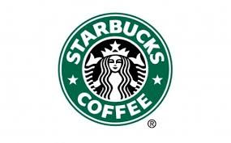

고객 만족도 조사
스타벅스

1. 이름을 입력해주세요
2. 고객 서비스에 만족하시나요?
만족
불만족
2-1. 불만족스럽다면 그 이유는 무엇인가요?
직원 불친절
음료 퀄리티 낮음
시설 부실
3. 무슨 음료를 선호하시나요?
카페인
디카페인
스무디
에이드
티
3-1. 3번에서 선택한 음료의 가격이 어느정도면 충분하다고 생각하시나요?
2500원~3000원
3000원~3500원
3500원~4000원
4000원~4500원
4500원~5000원
4. 커피 구매 시 가장 중요하게 생각하는 것이 무엇인가요?
원두 및 원산지 등급
맛과 향
위치(거리)
가격
5. 스타벅스 개선사항 또는 칭찬하실 내용이 있으시면 적어주세요.
6. 설문 날짜/시간